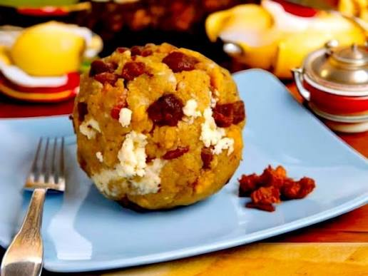

Bolón Mixto
Volver a la página principal: Página Principal
Descripción
El bolón de verde mixto es un desayuno tradicional ecuatoriano que combina plátano verde majado con queso y chicharrón, formando una bola grande y dorada por fuera, suave por dentro. Es muy popular en la Costa del Ecuador y se sirve caliente, acompañado de huevo frito, café y ají.

Lista de Ingredientes
- 2 plátanos verdes o pintones
- 150 gr chicharrón de cerdo cortado muy finamente
- 150 gr queso fresco rallado
- 1/2 cda. sal
- 1 cda. mantequilla
- aceite para freír
Preparación
-
Retira la cáscara de los plátanos y córtalos en 3.
-
En una olla coloca agua suficiente que cubra completamente los plátanos. Añade sal y deja hervir por 30 minutos.
-
Cuando esté aún tibio, al menos lo suficiente para manejarlo con las manos, agrega el chicharrón picado finamente o molido y el queso rallado grueso.
-
Mezcla todo muy bien, amásalo con las manos hasta que esté integrado.
-
Forma bolas con las manos, del tamaño que gustes.
-
Finalmente, sobre una sartén con aceite caliente, fríe las bolas hasta que se doren.
-
Escúrrelos en papel absorbente y sirve cuando estén aún calientes. Acompaña con café (es lo mejor).